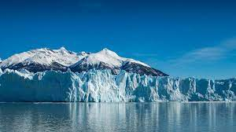
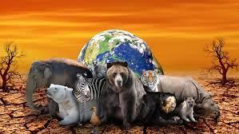
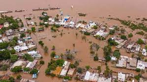
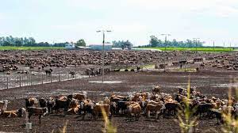
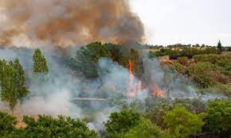

QUE CONSECUENCIAS TIENE EL CALENTAMIENTO GLOBAL
1. Deshielo de los glaciares. La glacióloga Twila Moon, del Centro Nacional de Datos de Hielo y Nieve de la Universidad de Colorado en Boulder (Estados Unidos), afirma en un artículo publicado en la revista Science que los glaciares de todo el
mundo están desapareciendo y que el derretimiento del hielo contribuye a aumentar el nivel del mar, lo que puede causar el desplazamiento de millones de personas.

2.Desaparición de especies animales y vegetales. El deshielo de los glaciares y
el aumento de la temperatura afectan a numerosas especies de animales y plantas, especialmente al oso polar, que ve disminuir su hábitat y desaparecer su forma de vida.

3.Inundaciones. El aumento del nivel del mar y la subida de la temperatura suponen un incremento de las precipitaciones en determinados lugares, en los que se
producen inundaciones. Muchas ciudades costeras en todo el mundo se encuentran en planicies situadas bajo el nivel del mar, por lo que el riesgo de inundaciones es alto.

4.Efectos sobre la agricultura y en la ganadería.
El aumento de la temperatura y la sequía pueden afectar gravemente a la agricultura y a la ganadería y producir escasez de alimentos.

5.Incendios forestales. Suponen un peligro no solo para los animales y las plantas, sino también para el ser humano, debido a la liberación de dióxido de carbono.

6.Consecuencias para la salud. La contaminación del aire que se deriva del
calentamiento global puede producir consecuencias adversas en nuestra salud como problemas respiratorios o infecciones.